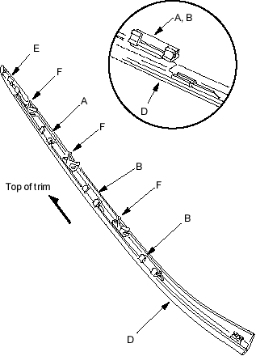
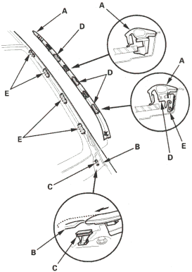

- Scrape or wipe the excess adhesive off with a putty knife or towel. To remove adhesive from a painted surface or the windshield, wipe with a soft shop towel dampened with alcohol.
- Let the adhesive dry for at least 1 hour, then spray water over the windshield and check for leaks. Mark leaking areas and let the windshield dry, then seal with sealant:
- Let the vehicle stand for at least 4 hours after windshield installation. If the vehicle has to be used within the first 4 hours, it must be driven slowly.
- Keep the windshield dry for the first hour after installation.
- Reinstall the cowl covers, refer to the '01 Civic Shop Manual on this CD (see page 20-252).
- Install the clips (A, B) on both side trim (D). If the clips (E, F) are damaged, replace the side trim and clips as an assembly.
A: Grey
B: Blue

- On both sides of the windshield, install the trim to the clip (C), then set the bottom edge of the side trim (A) over the cowl cover (B) and align the clips (D) with the retainers (E) and push on the clip portions of the trim until the trim is fully seated on the windshield.

- Reinstall all remaining removed parts. Install the rearview mirror after the adhesive has dried thoroughly. Advise the customer not to do the following things for 2 to 3 days:
- Slam the doors with all the windows rolled up.
- Twist the body excessively (such as when going in and out of driveways at an angle or driving over rough, uneven roads).